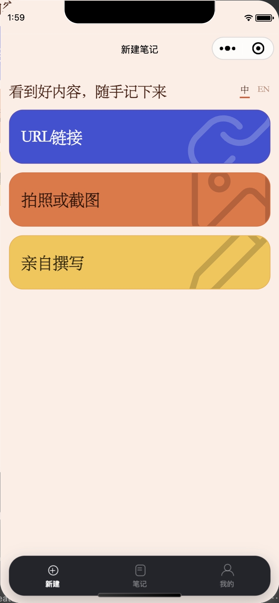
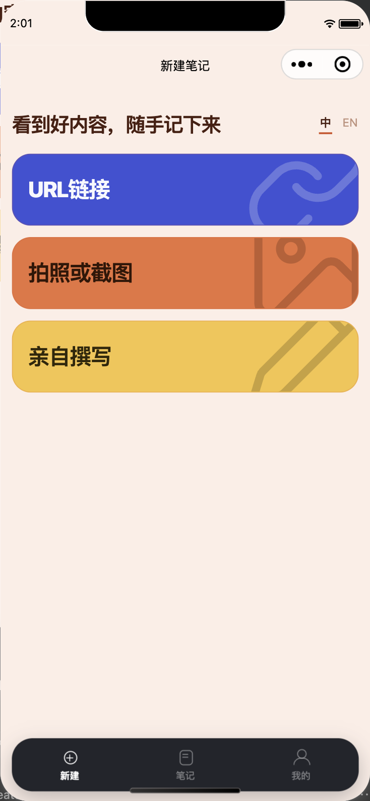
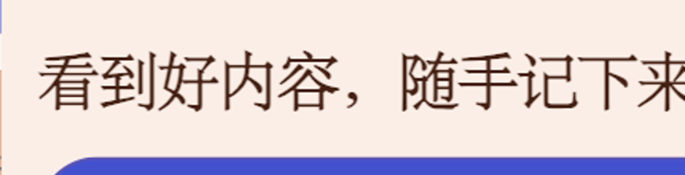

① 现状 苹方
三屏对照 · 同一屏、同一个构建左＝现状（苹方） 中＝把 app.wxss 那一行临时换成宋体链 右＝改回原样并重启编译后。中间那张不是画出来的，是模拟器渲的
② 临时换成宋体 STSong

③ 已还原 验证回滚

大标题放大 · 「看到好内容，随手记下来」这行在代码里是 font-weight 700。左：苹方粗体，笔画很厚；中：宋体命中了，但 700 没有变成很粗的宋体，反而比左边轻——这就是上一轮我说"字重要配套改"的那件事，现在有凭据了


入口卡标签放大 · 「拍照或截图」卡片标题在代码里是 font-weight 800。同一件事：宋体在 800 下也没有变粗，只是笔画结构换了

导航条标题 · 「新建笔记」三张一模一样——这一行是微信原生画的，页面 CSS 管不到它。所以"整站换字体"必然留一条尾巴在上面


结论：能调，而且已经调通过一次。改的就是
三条实测出来的限制
① 导航条那一行标题改不到（上面第三排），这是平台行为，不是我没做。
② 宋体在 700 / 800 下不会变成"很粗的宋体"，视觉上比苹方粗体还轻一档——所以真要做默认宋体，字重必须配套调，否则标题会显得没劲。这一条上一轮我只是推断，现在是实测。
③ 这是 iOS 模拟器的结果。安卓命不中 STSong，会回落到系统黑体，得单独给一条降级链。
为什么还没提交这个改动：默认从苹方改宋体是全站可见的变化，而 1.4.0 正在审核中；要不要跟这一批一起走、还是等这版发完再改，是他拍板的事。
app.wxss 第 69 行那一处 font-family，把 'STSong','Songti SC' 放在链子最前面，模拟器立刻命中宋体；这一处改完，列表、卡片、按钮、tab 栏、设置页全部跟着变。代码我已经还原了（第三张就是还原后重编译截的，和第一张逐像素一致），现在仓库里 git status 对 app.wxss 是干净的。三条实测出来的限制
① 导航条那一行标题改不到（上面第三排），这是平台行为，不是我没做。
② 宋体在 700 / 800 下不会变成"很粗的宋体"，视觉上比苹方粗体还轻一档——所以真要做默认宋体，字重必须配套调，否则标题会显得没劲。这一条上一轮我只是推断，现在是实测。
③ 这是 iOS 模拟器的结果。安卓命不中 STSong，会回落到系统黑体，得单独给一条降级链。
为什么还没提交这个改动：默认从苹方改宋体是全站可见的变化，而 1.4.0 正在审核中；要不要跟这一批一起走、还是等这版发完再改，是他拍板的事。